day06 网络和并发¶
今日概要¶
- 网络编程，写得好 & 用的多（底层用到了）。【实战应用】
- 并发编程
- 线程开发
- 线程安全
- 线程池
- 单例模式（2种单例模式：模块导入、元类、
__new__）
1. 网络编程¶
内网和外网的概念。
一个员工第一天日志：
- 很多的账号：邮箱、内部系统、任务管理（内网访问，外网无法访问）。
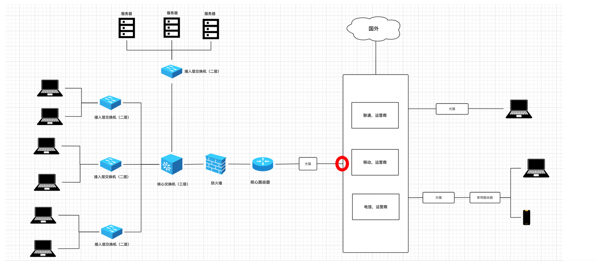
如果我在家加班？需要用到内网的系统。
- 个人级别，远程连接。 teamviewer
- 公司级别，VPN，通道（用户名&秘钥）。 类似于翻墙。【内网系统，VPN】
与你们可能最相关：gitlab
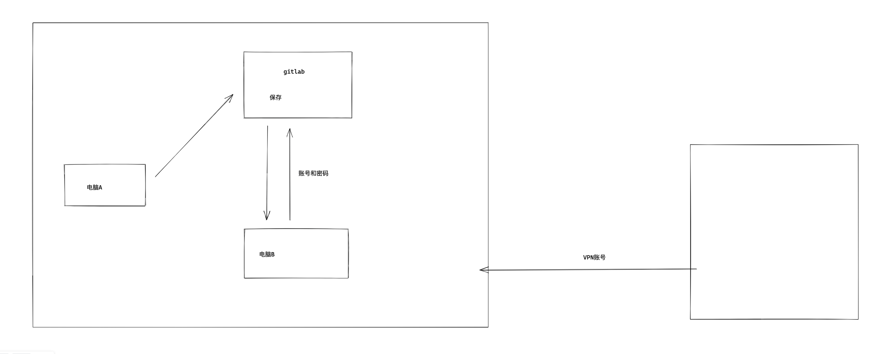
2.开发一个”网站“¶
2.1 网站的祖宗¶
socket服务端：
import socket
sock = socket.socket(socket.AF_INET, socket.SOCK_STREAM)
sock.bind(('IP', 8001)) # 监听IP和端口
sock.listen(5) # 排队等5个人
while True:
conn, addr = sock.accept() # 阻塞，等待用户来连接
client_data = conn.recv(1024) # 阻塞，等待用户发来消息
print(client_data.decode('utf-8'))
conn.sendall("hello world".encode('utf-8')) # 给用户回消息
conn.close() # 关闭连接
sock.close()
自己再写一个socket客户端。
然后：
- 启动服务端
- 让客户度去向服务端发送请求。
让你开发一个网站：
- 写一个socket服务端
import socket
sock = socket.socket(socket.AF_INET, socket.SOCK_STREAM)
sock.bind(('IP', 8001)) # 监听IP和端口
sock.listen(5) # 排队等5个人
while True:
conn, addr = sock.accept() # 阻塞，等待用户来连接
client_data = conn.recv(1024) # 阻塞，等待用户发来消息
print(client_data.decode('utf-8'))
conn.sendall(b"HTTP/1.1 200 OK\r\n\r\n") # 固定要返回给浏览器
conn.sendall(b"hello <h1>alex</h1>") # 返回的内容
conn.close() # 关闭连接
sock.close()
import socket
def handle_request(client):
buf = client.recv(1024) # 接收发来的请求（不做任何处理，登录、注册、....）
# ....
client.send(b"HTTP/1.1 200 OK\r\n\r\n")
client.send(b"Hello, Alex")
def main():
sock = socket.socket(socket.AF_INET, socket.SOCK_STREAM)
sock.bind(('0.0.0.0',80)) # 本机的80端口
sock.listen(5)
while True:
connection, address = sock.accept()
handle_request(connection) # 一旦有人来连接
connection.close()
if __name__ == '__main__':
main()
- socket客户端（浏览器）
2.2. 租服务器（外网IP）【腾讯云】¶
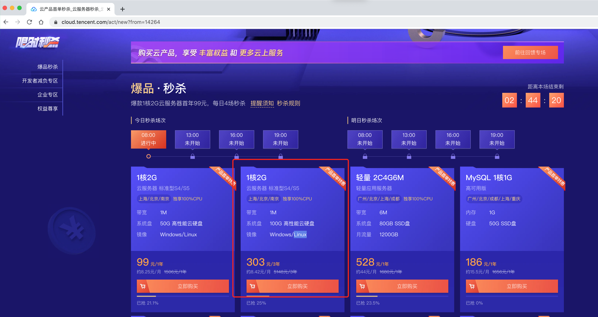
注意：Linux（centos7）。
登录平台：
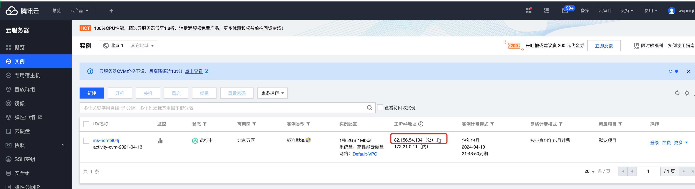
2.3 安全组配置¶
哪些指定端口是开放。
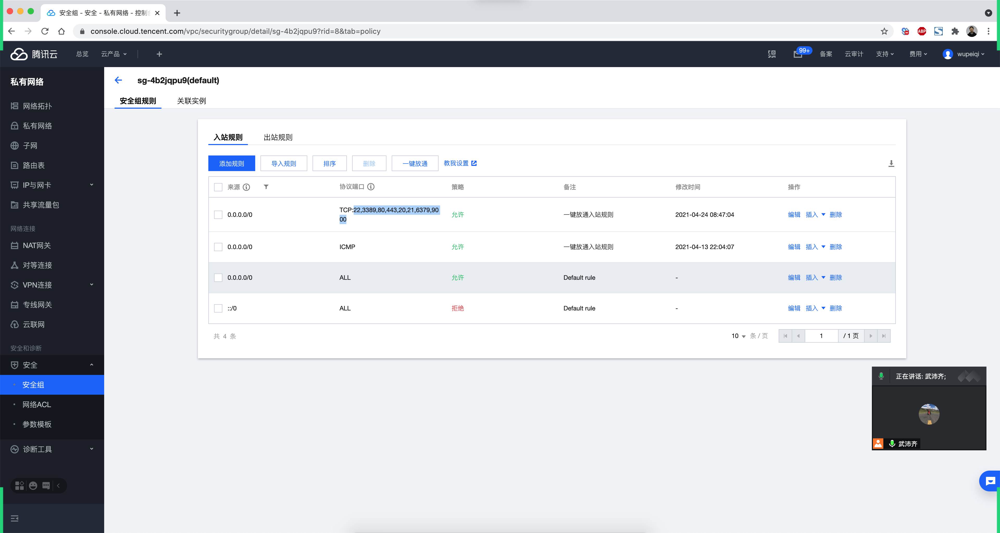
访问我的这个电脑时：
2.4 本地开发代码¶
import socket
def handle_request(client):
buf = client.recv(1024) # 接收发来的请求（不做任何处理，登录、注册、....）
# ....
client.send(b"HTTP/1.1 200 OK\r\n\r\n")
client.send(b"Hello, Alex")
def main():
sock = socket.socket(socket.AF_INET, socket.SOCK_STREAM)
sock.bind(('192.168.111.11', 80)) # 本机的80端口
sock.listen(5)
while True:
connection, address = sock.accept()
handle_request(connection) # 一旦有人来连接
connection.close()
if __name__ == '__main__':
main()
2.5 上传到服务器运行¶
上传文件的形式：
- FTP（filezilla）
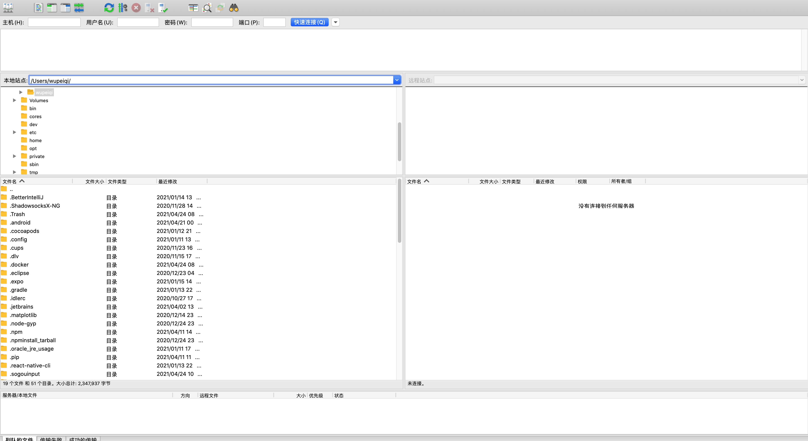
- Lz & scp
上述工具都可以实现上传代码。
程序员，不会用上述的工具去上传代码，而是用git来进行上传。
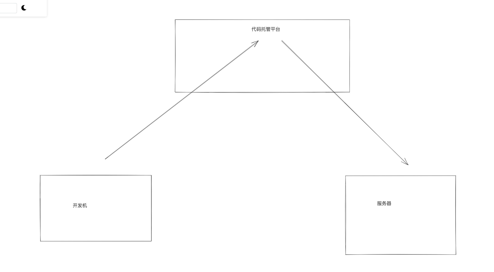
- 代码托管平台：创建一个仓库（文件夹）。
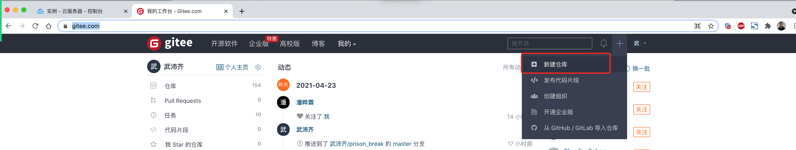
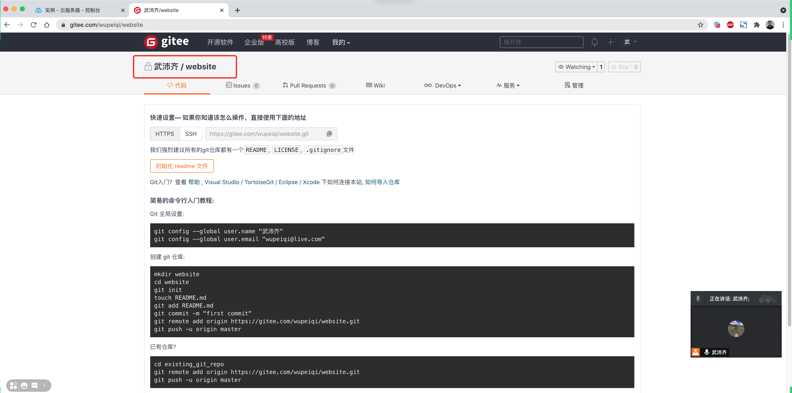
文件夹地址：https://gitee.com/wupeiqi/website.git （具体地址根据自己的情况来定）
-
在本机，将写好的代码上传。
-
第一次上传代码：
-
以后再上传代码：
-
在服务器上，将代码拉下来。
-
登录服务器
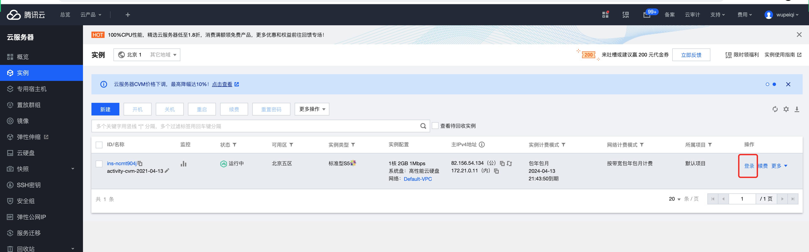
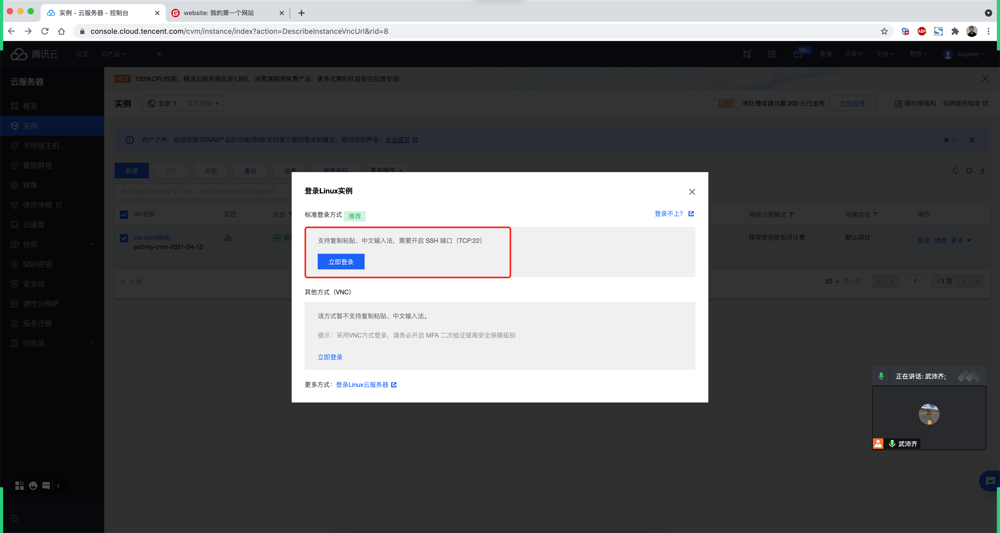
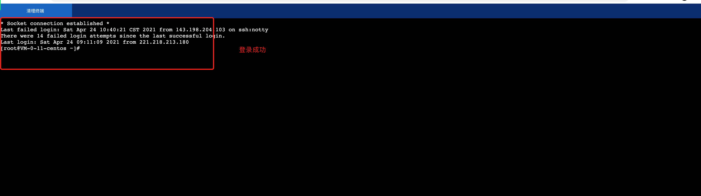
以后所有的操作都在黑框中
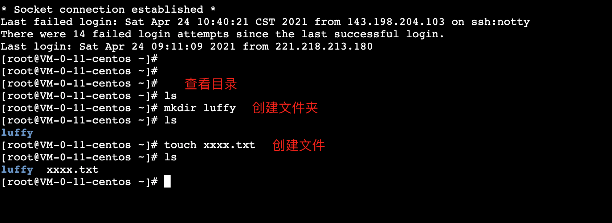
通过命令，将代码从代码仓库下载下来。
- 想要下载，必须要借助git软件。安装上git
- 第一次下载代码
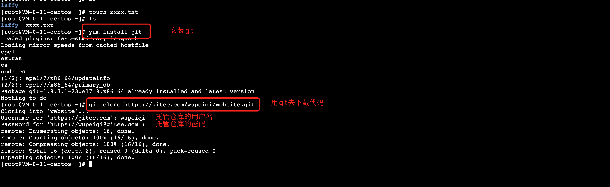
- 更新代码
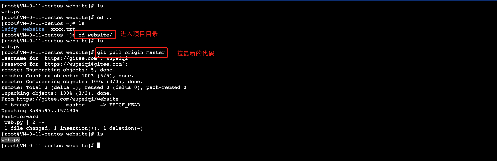
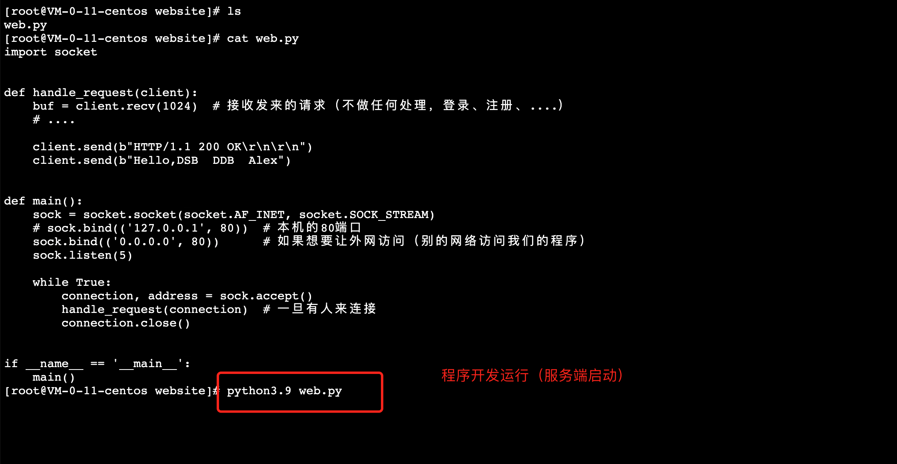
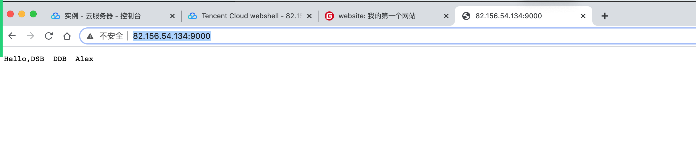
假设，现在你们FTP的作业 & 服务器 & 代码放上去 & 运行起来（开放服务）。
2.6 域名¶
1. 花钱，租域名。【阿里云】¶
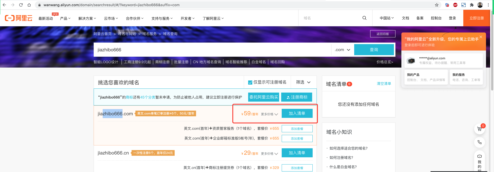
2.域名解析¶
域名 -> 服务器IP绑定。
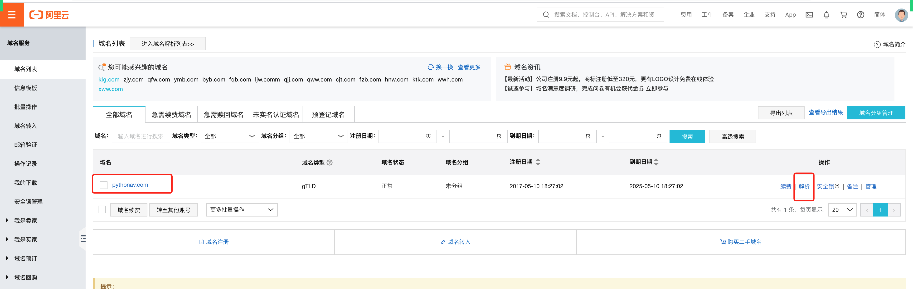
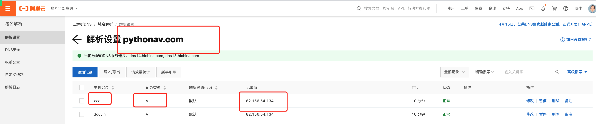
3.访问服务¶
由于：
pythonav.com 域名。
www.pythonav.com 47.104.0.201
task.pythonav.com 81.70.236.53
xxx.pythonav.com 82.156.54.134
...
疑问：网站开发时，用浏览器访问网站时，自动会携带80端口
http://xxx.pythonav.com -> http://xxx.pythonav.com:80
https://xxx.pythonav.com -> http://xxx.pythonav.com:443
浏览器不给咱们自动携带9000，只能自己写： http://xxx.pythonav.com:9000/
如果让自己的程序监听的80短口，哪么以后就不用输入其他的端口了：
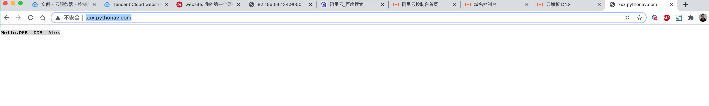
import socket
def handle_request(client):
buf = client.recv(1024) # 接收发来的请求（不做任何处理，登录、注册、....）
# ....if xx..xxxx....
#
client.send(b"HTTP/1.1 200 OK\r\n\r\n")
client.send(b"Hello,DSB DDB Alex")
def main():
sock = socket.socket(socket.AF_INET, socket.SOCK_STREAM)
# sock.bind(('127.0.0.1', 80)) # 本机的80端口
sock.bind(('0.0.0.0', 80)) # 如果想要让外网访问（别的网络访问我们的程序）
sock.listen(5)
while True:
connection, address = sock.accept()
handle_request(connection) # 一旦有人来连接
connection.close()
if __name__ == '__main__':
main()
总结：整体的意思：
- 学开发，写代码（网络相关的代码） - socket 。
- Linux & 项目项目部署时， 基于网络知识 + 代码。
答疑环节¶
-
买域名之后，自然就有解析的功能。
-
为什么不写成其他
-
上传到服务器有一个IP地址。
-
开发机（内网IP）：192.168.11.11
在我本地运行，只能让局域网用户访问。
-
服务器（内网IP、外网IP 82.156.54.134 ）：
所有有网络的人都可以访问。 缺点在于，每次上线到服务器时IP都要改下。
-
并发，将大量的请求分发到给多个人去处理（分布式）。
-
多个服务
-
穷公司，租一台服务器（2k/年）。
- 官网：80
- 文件共享服务器：9000
- 员工打卡系统：8080
- 案例：电影网站。
- 大公司，一台服务器做一个事（官网：80）。
上述网站缺点：
-
并发能力差
-
了解底层，开进程 or 线程 or IO复用等。
-
企业开发，开进程 or 线程 or IO复用等不需要写，而是需要懂并且进行配置。
-
业务开发繁杂，有了web框架让你来做这些事。
from flask import Flask
app = Flask(__name__)
@app.route("/index")
def index():
return "xxxx"
app.run()
import socket
def handle_request(client):
buf = client.recv(1024) # 接收发来的请求（不做任何处理，登录、注册、....）
# ....if xx..xxxx....
#
client.send(b"HTTP/1.1 200 OK\r\n\r\n")
client.send(b"Hello,DSB DDB Alex")
def main():
sock = socket.socket(socket.AF_INET, socket.SOCK_STREAM)
# sock.bind(('127.0.0.1', 80)) # 本机的80端口
sock.bind(('0.0.0.0', 80)) # 如果想要让外网访问（别的网络访问我们的程序）
sock.listen(5)
while True:
connection, address = sock.accept()
handle_request(connection) # 一旦有人来连接
connection.close()
if __name__ == '__main__':
main()
3.并发编程¶
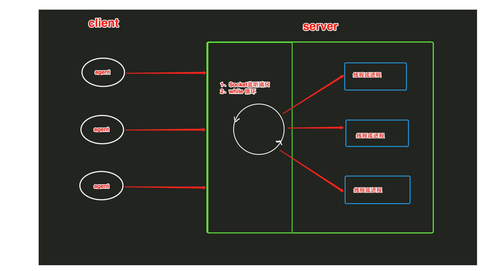
3.1 线程提升并发¶
import socket
import threading
def handle_request(client):
buf = client.recv(1024) # 接收发来的请求（不做任何处理，登录、注册、....）
# ....if xx..xxxx....
#
client.send(b"HTTP/1.1 200 OK\r\n\r\n")
client.send(b"Hello,DSB DDB Alex")
connection.close()
def main():
sock = socket.socket(socket.AF_INET, socket.SOCK_STREAM)
sock.bind(('0.0.0.0', 80)) # 如果想要让外网访问（别的网络访问我们的程序）
sock.listen(5)
while True:
connection, address = sock.accept() # 等待客户端来连接
# 创建了一个线程
t = threading.Thread(target=handle_request,args=(connection,))
# 线程去运行
t.start()
if __name__ == '__main__':
main()
线程可以提升并发能力，在python内部为你提供了 socketserver 的模块（多线程和多进程机制）。
import socketserver
class MyServer(socketserver.BaseRequestHandler):
def handle(self):
client = self.request
buf = client.recv(1024) # 接收发来的请求（不做任何处理，登录、注册、....）
client.send(b"HTTP/1.1 200 OK\r\n\r\n")
client.send(b"Hello,DSB DDB Alex")
connection.close()
if __name__ == '__main__':
server = socketserver.ThreadingTCPServer(('0.0.0.0',80),MyServer)
server.serve_forever()
3.2 socketserver的源码分析¶
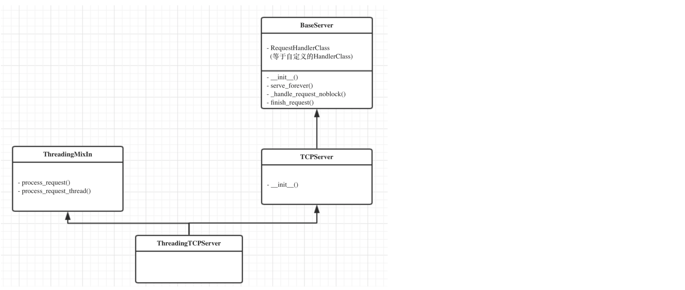
上述过程，手动自己创建线程提升我们项目的并发能力。
3.3 web实战¶
实战中提升并发能力，不需自己写进程和线程。
例如：uwsgi，配置：进程和线程。
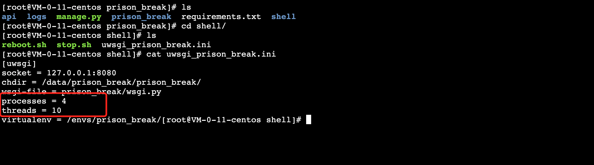
我在开发网站时，自己没有写过任何进程和线程相关代码。
3.4 学并发的意义¶
- 网站和平台， 配置好，懂。
- 写脚本 + 并发（自己写）
4.线程知识点¶
4.1 线程安全¶
import threading
loop = 10000000
number = 0
# 加
def _add(count):
global number
for i in range(count):
number += 1
# 减
def _sub(count):
global number
for i in range(count):
number -= 1
# 创建了1个线程
t1 = threading.Thread(target=_add, args=(loop,)) # 线程A，10000000 循环
t1.start()
t1.join() # 等待当前线程执行完毕后，在继续向下执行。
# 创建了1个线程
t2 = threading.Thread(target=_sub, args=(loop,)) # 线程B，10000000 循环
t2.start()
t2.join()
print(number) # 0
import threading
loop = 10000000
number = 0
# 加
def _add(count):
global number
for i in range(count):
number += 1
# 减
def _sub(count):
global number
for i in range(count):
number -= 1
# 创建了2个线程（同时2个线程都在执行）
t1 = threading.Thread(target=_add, args=(loop,)) # 线程A，10000000 循环
t2 = threading.Thread(target=_sub, args=(loop,)) # 线程B，10000000 循环
t1.start()
t2.start()
t1.join() # t1线程执行完毕,才继续往后走
t2.join() # t2线程执行完毕,才继续往后走
print(number) # 不一定
数据安全，多个线程去同时抢占式的操作同同一个值时，不要让他出现数据混乱。
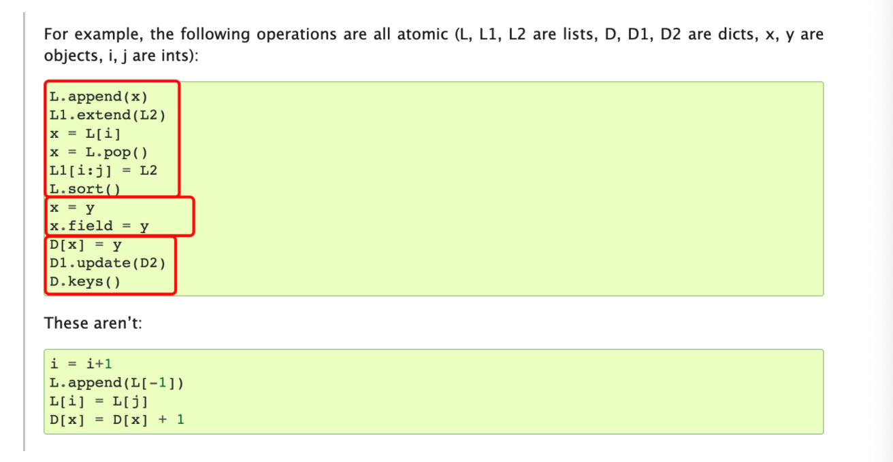
- Python内部有些东西，本身就是数据安全。
v1 = [] # 1/2/3 顺序 1、3、2
v1.append(1)
v1.append(2)
v1.append(3)
v1.extend([11,22,33,44])
v1.pop()
v1[1]
- 需人为让他数据安全
简单记忆法：
RLock和Lock
import threading
num = 0
lock_object = threading.RLock()
def task():
print("开始")
lock_object.acquire() # 第1个抵达的线程进入并上锁，其他线程就需要再此等待。
global num
for i in range(1000000):
num += 1
lock_object.release() # 线程出去，并解开锁，其他线程就可以进入并执行了
print(num)
for i in range(2):
t = threading.Thread(target=task)
t.start()
4.2 线程池¶
多线程提高并发能力时，不是说 多开线程 性能就好。
import threading
def task(video_url):
pass
url_list = [ "www.xxxx-{}.com".format(i) for i in range(30000) ]
for url in url_list:
t = threading.Thread(target=task, args=(url,))
t.start()
# 这种每次都创建一个线程去操作，创建任务的太多，线程就会特别多，可能效率反倒降低了。
import time
from concurrent.futures import ThreadPoolExecutor
def task(video_url,num):
print("开始执行任务", video_url)
time.sleep(5)
# 创建线程池，最多维护10个线程。
pool = ThreadPoolExecutor(10)
# 将30000个任务都交给线程池，10个线程。 他会：10个为一组去运行。
url_list = ["www.xxxx-{}.com".format(i) for i in range(30000)]
for url in url_list:
pool.submit(task, url,2)
print("END")
注意：尽量用线程池。
4.3 单例模式（面试题）¶
class Foo(object):
pass
obj1 = Foo() # 根据Foo类创建了一个实例
obj2 = Foo() # 根据Foo类创建了一个实例
print(obj1)
print(obj2)
import time
import threading
class Foo(object):
instance = None
def __new__(cls, *args, **kwargs):
if cls.instance:
return cls.instance
cls.instance = super().__new__(cls)
return cls.instance
# 多线程情况下，有问题了。
def task():
obj1 = Foo() # 创建了对象
print(obj1)
for i in range(5):
t = threading.Thread(target=task)
t.start()
# 在非多线程情况下，没问题。
"""
obj1 = Foo()
obj2 = Foo()
print(obj1)
print(obj2)
"""
import time
import threading
class Foo(object):
instance = None
lock = threading.RLock()
def __new__(cls, *args, **kwargs):
with cls.lock:
if cls.instance:
return cls.instance
time.sleep(1)
cls.instance = super().__new__(cls)
return cls.instance
# obj1 = Foo()
# obj2 = Foo()
# print(obj1)
# print(obj2)
def task():
obj1 = Foo() # 创建了对象
print(obj1)
for i in range(5):
t = threading.Thread(target=task)
t.start()
import time
import threading
class Foo(object):
instance = None
lock = threading.RLock()
def __new__(cls, *args, **kwargs):
if cls.instance:
return cls.instance
with cls.lock:
if cls.instance:
return cls.instance
cls.instance = super().__new__(cls)
return cls.instance
def task():
obj1 = Foo() # 创建了对象
print(obj1) # 用的都是第一次创建的对象
for i in range(50):
t = threading.Thread(target=task)
t.start()
# ......
obj1 = Foo() # 申请 获取 释放
obj1 = Foo() # 申请 获取 释放
总结¶
-
开发一个网站（流程） - 网络编程去写代码 - 网络知识去部署
-
Git配合部署
- 服务器、域名、端口
- 并发编程
- 数据分析，脚本（到底怎么写）。
- 全栈开发，部署+配置。
- 平台部署
- 脚本
- 线程
- 线程安全
- 线程池
- 单例模式（面试题 & 源码）【元类、模块导入、new】
- 元类 + new ， 自己加锁
- 模块导入，内部实现了多线程处理机制。
答疑¶
-
到现在我都不明白git的优势
-
git上线的流程
-
优势
- 版本控制
- 协同开发
-
举例：
- 我们电脑丢了
- gitee被黑了
- 协同开发遍历
- 突然有bug
- 回滚
-
git托管
-
自动部署
下午答疑¶
孔维平¶
saas，服务。¶
- 软件开发公司
-
通用的平台
-
开发100各组件。【10 - 5：5】
- 服务：
- A，5w 【20】
- B，10w 【50】
- C，20w 【100】 混淆->反编译
-
平台
www.pythonav.com- 100组件，跳出20个 -> 配置（ luffy.pythonav.com）
- 100组件，跳出20个 -> 配置（ luffy.pythonav.com）
- 100组件，跳出20个 -> 配置（ luffy.pythonav.com）
- 100组件，跳出20个 -> 配置（ luffy.pythonav.com）
-
数据隔离
- 每个公司一个数据库
- 每个公司一个数据库
- 每个公司一个数据库
反向代理¶
宋永杰¶
Nginx 和 uwgsi 怎么做开机启动（一条命令）
于科峰¶
分布式爬虫
秀奎¶
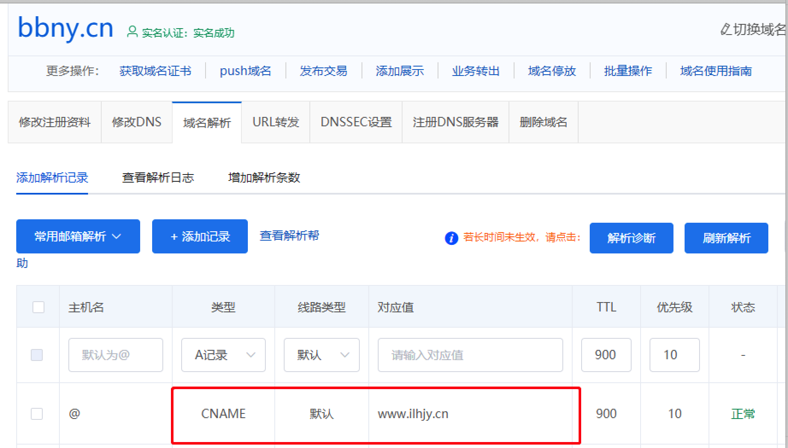
正泰永¶
运维开发方向。
- 基础
- 网络并发
- 【节点】自己的公司：用python写脚本（ paramiko ） + 脚本
- 前端 & django
- 前后端不分离，django+html+CSS+JS 。
- 【节点】代码发布。
- 前后端分离，django + drf + vue.js
- 【运维平台】CMDB+配置管理+终端命令
popen 和 paramiko只会一种就行吗？
刘长利¶
前端应该写什么。
https://pythonav.com/wiki/detail/5/61/
注意：前端的时候不用多看 ajax + django。（前后端分离讲axios）
谢君¶
线程任务执行完成，拿到结果。
问题：
- 获取设备信息
- 期望
# 第一步：先去把进程杀掉。
subprocess.getout("adb 服务A.....")
# 第二步：再去读取日志
result = subprocess.getout("adb 服务A.....")
print(result)
刘工¶
pyqt - 代码。
- 界面去监控硬件设备的数据（画图 和 实时数据展示 ）
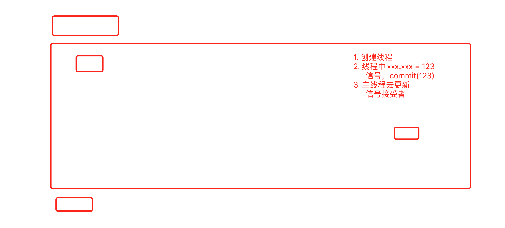
君刚¶
有两台设备主机，如何同时展现在一台显示器上，实现实时监控。
- 设备：分屏。
- 程序：直播 + 推流。
OBS，屏幕。URL
nginx + ffmpeg （URL） 切成M3U8
页面
lock（）和join（）有什么区别
join，针对线程，等待这个线程执行完毕（等待多久）
t = threading.Thread(target=函数)
t.start()
t.join() # 主线程等待子线程中的函数执行完毕之后，再继续向下。
print(123)
count = 10
def task():
print("开始")
with lock: # 同一时刻只允许一个线程执行这个代码。
count +=1
for i in range(10):
t = threading.Thread(target=task)
t.start()
count = 10
def task():
print("开始")
count +=1
print(count)
for i in range(10):
t = threading.Thread(target=task)
t.start()
t.join() # 第一个子线程执行完毕后，再继续执行
for i in range(10):
task()
进程：为什么Process类要放到 if name=='main' 下面？
- fork ；linux + Mac
- spawn； win + mac
- forkserver；unix
扩展：
import multiprocessing
import time
def task():
print(name)
name.append(123)
if __name__ == '__main__':
# 修改创建进程的模式：fork、spawn、forkserver
multiprocessing.set_start_method("fork") # fork、spawn、forkserver
name = []
p1 = multiprocessing.Process(target=task)
p1.start()
time.sleep(2)
print(name) # []
文佳话（CDN）¶
nginx+lua（测试不同区域用户打开网速度）
A机房：系统
B机房：系统
自动化运维部署，想实现部署 应用。
- Paramiko
import paramiko
private_key = paramiko.RSAKey.from_private_key_file('/home/auto/.ssh/id_rsa')
ssh = paramiko.SSHClient()
ssh.set_missing_host_key_policy(paramiko.AutoAddPolicy())
# 连接服务器
ssh.connect(hostname='c1.salt.com', port=22, username='wupeiqi', key=private_key)
# 执行命令
stdin, stdout, stderr = ssh.exec_command('yum install mysql -y')
# 获取命令结果
result = stdout.read()
# 关闭连接
ssh.close()
-
网站
-
按钮，点击
import paramiko private_key = paramiko.RSAKey.from_private_key_file('/home/auto/.ssh/id_rsa') ssh = paramiko.SSHClient() ssh.set_missing_host_key_policy(paramiko.AutoAddPolicy()) # 连接服务器 ssh.connect(hostname='c1.salt.com', port=22, username='wupeiqi', key=private_key) # 执行命令 stdin, stdout, stderr = ssh.exec_command('yum install mysql -y') # 获取命令结果 result = stdout.read() # 关闭连接 ssh.close() -
django中查询不同的数据库
DATABASES = {
'default': {
'ENGINE': 'django.db.backends.postgresql',
'NAME': 'mydatabase',
'USER': 'mydatabaseuser',
'PASSWORD': 'mypassword',
'HOST': '127.0.0.1',
'PORT': '5432',
},
'v1': {
'ENGINE': 'django.db.backends.postgresql',
'NAME': 'mydatabase',
'USER': 'mydatabaseuser',
'PASSWORD': 'mypassword',
'HOST': '127.0.0.1',
'PORT': '5432',
}
}
class AuthRouter:
def db_for_read(self, model, **hints):
model._meta.app_label
if model._meta.name in ["user","order"]
return 'default'
return "v1"
def db_for_write(self, model, **hints):
if model._meta.app_label in self.route_app_labels:
return 'default'
return "v1"
zack¶
大三，准备考研，到模块3了。
- 软件开发，不建议考研。
- AI相关，建议考研。【考研】+ 【听看 数据库 + 前端 看】。
自学新模块¶
- 百度，google，博客文章。
- 官方文档（很多官方文档垃圾）。
- demo
马岩¶
pdfmainer 读取pdf，文字顺序提取的是乱。位置有问题。
ocr。